| 상품 | 군마트 | 쿠팡 | 차이 | |
|---|---|---|---|---|
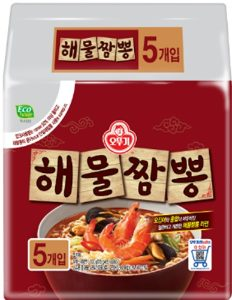 | 오뚜기 해물짬뽕 600 g | 3,900원 | 7,998원 | -51% |
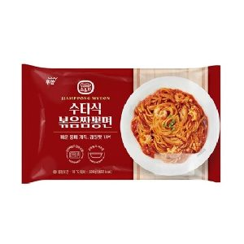 | 우양 쉐프스토리 수타식볶음짬뽕면 330g | 2,880원 | 5,520원 | -48% |
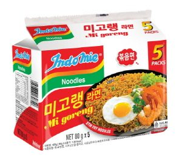 | 미고랭라면 400g | 1,280원 | 2,435원 | -47% |
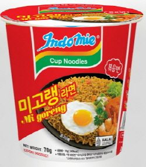 | 미고랭라면 컵라면 70g | 570원 | 1,066원 | -46% |
| 풀무원식품 새콤달콤생쫄면2인 460g | 3,000원 | 4,980원 | -40% | |
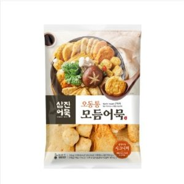 | 삼진식품 오동통 모듬어묵 700g | 6,020원 | 9,980원 | -40% |
| 오뚜기 진라면매운맛 110g | 670원 | 1,080원 | -38% | |
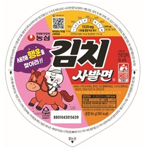 | 농심 김치사발면 86g | 600원 | 945원 | -36% |
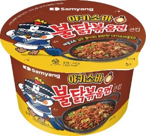 | 삼양식품 큰컵야키소바불닭볶음면 100g | 1,230원 | 1,921원 | -36% |
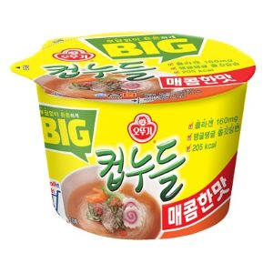 | 오뚜기 빅컵누들 매콤한맛 61g | 1,160원 | 1,800원 | -36% |
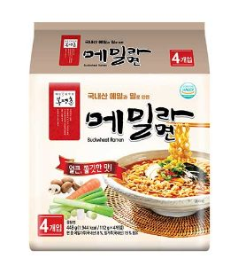 | 봉평농원 메밀라면 112gx4 | 4,510원 | 6,984원 | -35% |
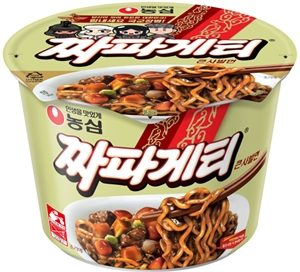 | 농심 짜파게티큰사발면 123g | 790원 | 1,210원 | -35% |
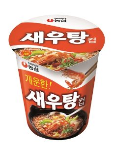 | 농심 새우탕컵 67g | 710원 | 1,080원 | -34% |
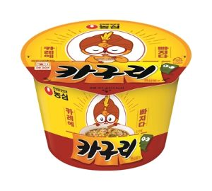 | 농심 카구리큰사발면 103g | 1,020원 | 1,540원 | -34% |
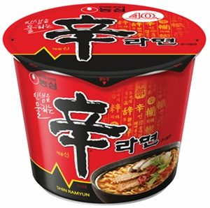 | 농심 신라면큰사발 114g | 870원 | 1,310원 | -34% |
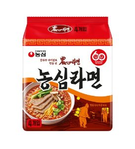 | 농심라면 124g*4개입 | 3,160원 | 4,560원 | -31% |
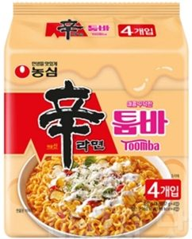 | 농심 신라면툼바 137g*4입 | 3,110원 | 4,490원 | -31% |
| 삼양식품 까르보불닭볶음면 130g*4입 | 4,100원 | 5,870원 | -30% | |
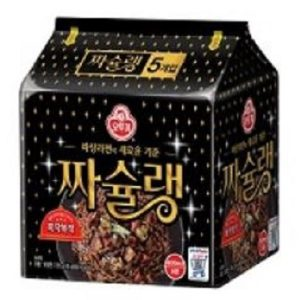 | 오뚜기 짜슐랭 멀티 145g*5 | 3,150원 | 4,480원 | -30% |
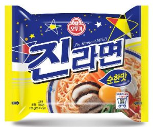 | 오뚜기 진라면 120g | 540원 | 766원 | -30% |
라면 말고 다른 것도
더 이상 직접 비교하지 마세요.
군마트 상품을 한곳에 모아 PX 가격과 온라인 가격을 쉽게 비교할 수 있습니다.
이게 실제 화면이에요. 상품을 누르면 바로 열립니다.
국방가족 분들이 조금이라도 편하게 군마트를 이용하셨으면 하는 마음으로 만들었습니다.
국방가족을 위한 작은 재능기부입니다.